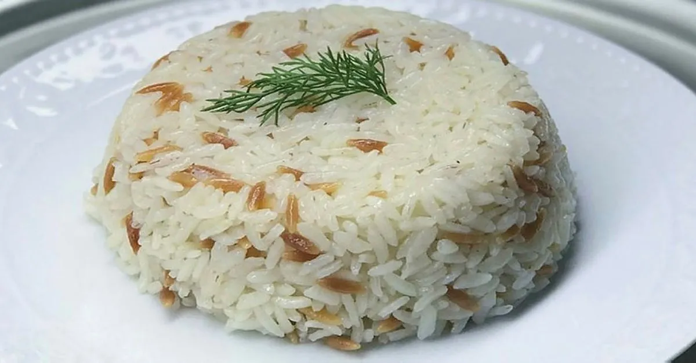

ŞEHRİYELİ PİLAV TARİFİ VİDEOLU
1. Pirinçler bol su ile yıkanarak, ılık tuzlu suda yarım saat kadar bekletilir.
2. Bu süre sonunda, tuzlu suyu akıtılır ve pirinçler sudan geçirilerek, tüm suyu süzdürülür.
3. Pilav tenceresinde tereyağı eritilir, sıvı yağ da eklenerek üzerine arpa şehriyeler eklenir.
4. Şehriyenin rengi dönene kadar kavrulur.
5. Pirinçler ilave edilerek, 2-3 dk daha kavrulur.
6. Üzerine sıcak su eklenir ve tuzu ilave edilir.
7. Tencerenin kapağı kapatılarak, yüksek ateşte fazla suyu çekip pirinçler göz göz oluncaya kadar, yani pirinçlerin üzerinde su çekilip pirinçler göründüğünde kısık ateşe alın ve tamamen suyu çekene kadar pişirin.
8. Ocaktan aldıktan sonra, üzerine havlu kağıt koyarak kapağını tekrar kapatın ve demlenmesini bekleyin.
9. Pilavı güzelce karıştırdıktan sonra servis yapabilirsiniz.
